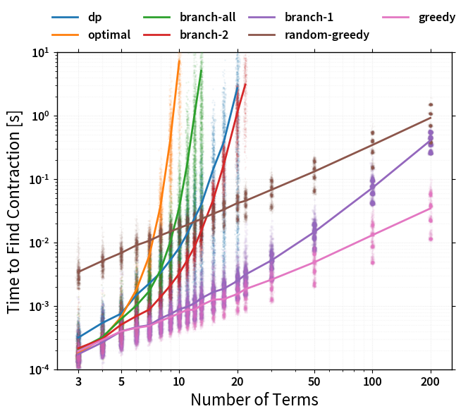
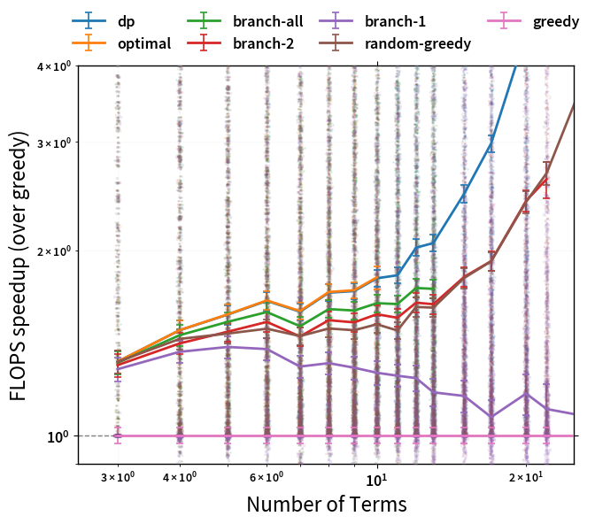

Introduction
Performing an optimized tensor contraction to speed up einsum involves two
key stages:
- Finding a pairwise contraction order, or 'path'.
- Performing the sequence of contractions given this path.
The better the quality of path found in the first step, the quicker the actual
contraction in the second step can be -- often dramatically. However, finding
the optimal path is an NP-hard problem that can quickly become intractable,
meaning that a balance must be struck between the time spent finding a path,
and its quality. opt_einsum handles this by using several path finding
algorithms, which can be manually specified using the optimize keyword.
These are:
- The
'optimal'strategy - an exhaustive search of all possible paths - The
'dynamic-programming'strategy - a near-optimal search based off dynamic-programming - The
'branch'strategy - a more restricted search of many likely paths - The
'greedy'strategy - finds a path one step at a time using a cost heuristic
By default (optimize='auto'), opt_einsum.contract will select the
best of these it can while aiming to keep path finding times below around 1ms.
An analysis of each of these approaches' performance can be found at the bottom of this page.
For large and complex contractions, there is the 'random-greedy' approach,
which samples many (by default 32) greedy paths and can be customized to
explicitly spend a maximum amount of time searching. Another preset,
'random-greedy-128', uses 128 paths for a more exhaustive search.
See RandomGreedyPath page for more details on configuring these.
Finally, there is the 'auto-hq' preset which targets a much larger search
time (~1sec) in return for finding very high quality paths, dispatching to the
'optimal', 'dynamic-programming' and then 'random-greedy-128' paths
depending on contraction size.
If you want to find the path separately to performing the
contraction, or just inspect information about the path found, you can use the
function opt_einsum.contract_path.
Examining the Path
As an example, consider the following expression found in a perturbation theory (one of ~5,000 such expressions):
'bdik,acaj,ikab,ajac,ikbd'
At first, it would appear that this scales like N^7 as there are 7 unique indices; however, we can define a intermediate to reduce this scaling.
# (N^5 scaling)
a = 'bdik,ikab,ikbd'
# (N^4 scaling)
result = 'acaj,ajac,a'
This is a single possible path to the final answer (and notably, not the most optimal) out of many possible paths. Now, let opt_einsum compute the optimal path:
import opt_einsum as oe
# Take a complex string
einsum_string = 'bdik,acaj,ikab,ajac,ikbd->'
# Build random views to represent this contraction
unique_inds = set(einsum_string) - {',', '-', '>'}
index_size = [10, 17, 9, 10, 13, 16, 15, 14, 12]
sizes_dict = dict(zip(unique_inds, index_size))
views = oe.helpers.build_views(einsum_string, sizes_dict)
path, path_info = oe.contract_path(einsum_string, *views)
print(path)
#> [(0, 4), (1, 3), (0, 1), (0, 1)]
print(path_info)
#> Complete contraction: bdik,acaj,ikab,ajac,ikbd->
#> Naive scaling: 7
#> Optimized scaling: 4
#> Naive FLOP count: 2.387e+8
#> Optimized FLOP count: 8.068e+4
#> Theoretical speedup: 2958.354
#> Largest intermediate: 1.530e+3 elements
#> --------------------------------------------------------------------------------
#> scaling BLAS current remaining
#> --------------------------------------------------------------------------------
#> 4 0 ikbd,bdik->ikb acaj,ikab,ajac,ikb->
#> 4 GEMV/EINSUM ikb,ikab->a acaj,ajac,a->
#> 3 0 ajac,acaj->a a,a->
#> 1 DOT a,a-> ->
We can then check that actually performing the contraction produces the expected result:
import numpy as np
einsum_result = np.einsum("bdik,acaj,ikab,ajac,ikbd->", *views)
contract_result = oe.contract("bdik,acaj,ikab,ajac,ikbd->", *views)
np.allclose(einsum_result, contract_result)
#> True
By contracting terms in the correct order we can see that this expression can be computed with N^4 scaling. Even with the overhead of finding the best order or 'path' and small dimensions,
opt_einsum is roughly 3000 times faster than pure einsum for this expression.
Format of the Path
Let us look at the structure of a canonical einsum path found in NumPy and its optimized variant:
einsum_path = [(0, 1, 2, 3, 4)]
opt_path = [(1, 3), (0, 2), (0, 2), (0, 1)]
In opt_einsum each element of the list represents a single contraction.
In the above example the einsum_path would effectively compute the result as a single contraction identical to that of einsum, while the
opt_path would perform four contractions in order to reduce the overall scaling.
The first tuple in the opt_path, (1,3), pops the second and fourth terms, then contracts them together to produce a new term which is then appended to the list of terms, this is continued until all terms are contracted.
An example should illuminate this:
---------------------------------------------------------------------------------
scaling GEMM current remaining
---------------------------------------------------------------------------------
terms = ['bdik', 'acaj', 'ikab', 'ajac', 'ikbd'] contraction = (1, 3)
3 False ajac,acaj->a bdik,ikab,ikbd,a->
terms = ['bdik', 'ikab', 'ikbd', 'a'] contraction = (0, 2)
4 False ikbd,bdik->bik ikab,a,bik->
terms = ['ikab', 'a', 'bik'] contraction = (0, 2)
4 False bik,ikab->a a,a->
terms = ['a', 'a'] contraction = (0, 1)
1 DOT a,a-> ->
A path specified in this format can explicitly be supplied directly to
opt_einsum.contract using the optimize keyword:
contract_result = oe.contract("bdik,acaj,ikab,ajac,ikbd->", *views, optimize=opt_path)
np.allclose(einsum_result, contract_result)
#> True
Performance Comparison
The following graphs should give some indication of the tradeoffs between path
finding time and path quality. They are generated by finding paths with each
possible algorithm for many randomly generated networks of n tensors with
varying connectivity.
First we have the time to find each path as a function of the number of terms in the expression:

Clearly the exhaustive ('optimal', 'branch-all') and exponential
('branch-2') searches eventually scale badly, but for modest amounts of
terms they incur only a small overhead. The 'random-greedy' approach is not
shown here as it is simply max_repeats times slower than the 'greedy'
approach - at least if not parallelized.
Next we can look at the average FLOP speedup (as compared to the easiest path
to find, 'greedy'):

One can see that the hierarchy of path qualities is:
'optimal'(used by auto forn <= 4)'branch-all'(used by auto forn <= 6)'branch-2'(used by auto forn <= 8)'branch-1'(used by auto forn <= 14)'greedy'(used by auto for anything larger)
Note
The performance of the 'random=greedy' approach (which is never used
automatically) can be found separately in RandomGreedyPath section.
There are a few important caveats to note with this graph. Firstly, the benefits of more advanced path finding are very dependent on the complexity of the expression. For 'simple' contractions, all the different approaches will mostly find the same path (as here). However, for 'tricky' contractions, there will be certain cases where the more advanced algorithms will find much better paths. As such, while this graph gives a good idea of the relative performance of each algorithm, the 'average speedup' is not a perfect indicator since worst-case performance might be more critical.
Note that the speedups for any of the methods as compared to a standard
einsum or a naively chosen path (such as path=[(0, 1), (0, 1), ...])
are all exponentially large and not shown.